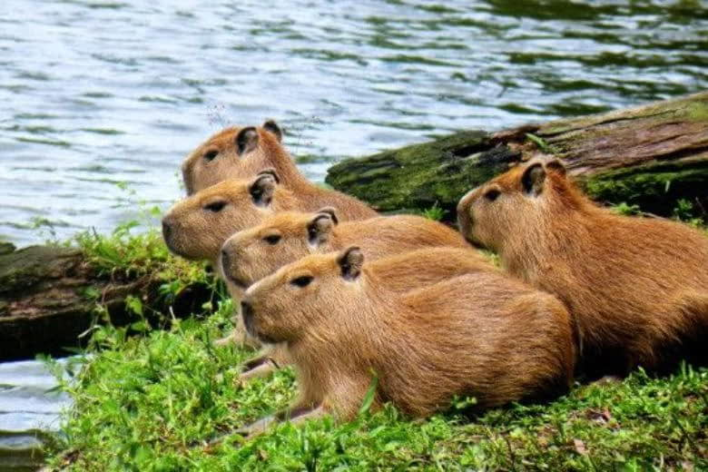
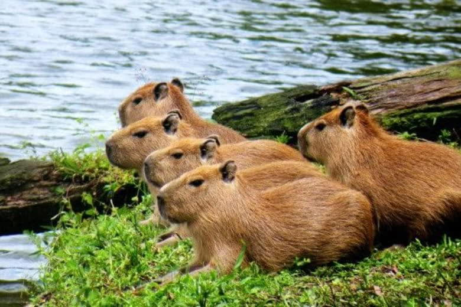

About Capybaras
Capybaras are the world's largest rodents. Native to South America, these semi-aquatic mammals are closely related to guinea pigs. They are highly social and can be found in groups of 10–20 individuals.
Discover the fascinating world of capybaras, the largest rodents on Earth!
Capybaras are the world's largest rodents. Native to South America, these semi-aquatic mammals are closely related to guinea pigs. They are highly social and can be found in groups of 10–20 individuals.
